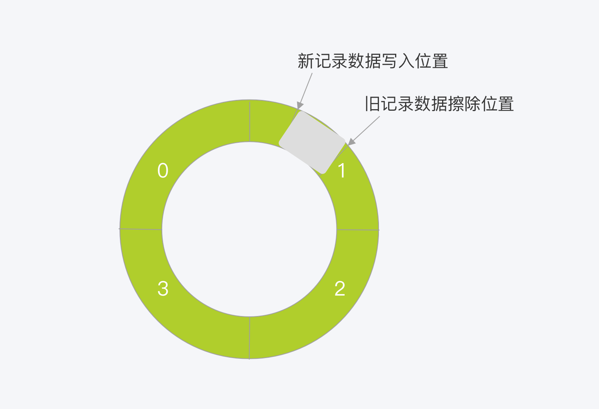

[基础] 一条更新 SQL 语句是怎么执行的¶
假设我们的建表语句如下：
create table T(ID int primary key, c int);
现在要将 ID = 2 的这一行的值 c 加 1，SQL 会这么写：
update T set c=c+1 where ID=2;
前一节我们介绍过了 SQL 查询语句的执行链路，更新语句其实也是执行同样的流程。
更新语句的执行流程¶
首先还是要连接数据库，这是连接器的工作
如果表使用了查询缓存的话，这一步会清空缓存。这也是一般不建议使用查询缓存的原因
分析器通过词法和语法分析，知道这是一条更新语句
优化器判定要使用主键 ID 这个索引
执行器负责执行，找到 ID = 2 的行，然后更新行数据
与查询流程不同的是，更新流程还涉及到两个重要的日志模块: redo log（重做日志） 和 binlog（归档日志） 。
日志模块¶
redo log¶
redo log 是 InnoDB 引擎中特有的。
当有一条记录需要更新的时候，InnoDB 引擎会先把记录写到 redo log （就像是一个临时的黑板）中，并更新内存。然后，InnoDB 会在合适的时候将操作记录更新到磁盘。
同时，redo log 的大小是固定的，所以空间不足且有新的记录更新时，需要擦除旧的日志记录。
这就相当于在黑板上擦除旧的数据来给新的数据腾出空间。
比如，配置 redo log 为一组 4 个文件，每个文件大小为 1GB。那么总共可以记录 4GB 的数据。
crash-safe
InnoDB 基于 redo log 日志，实现的在数据库发生异常重启后，仍能保证恢复之前的数据不丢失
但是有一点，redo log 是物理日志，记录的是「数据页上发生了什么变化」，而非 SQL 本身
binlig¶
首先要知道，MySQL 数据库分为两块
一块是 Server 层，负责 MySQL 功能层面的事情
一块是引擎层，负责存储相关的事情
之前提到的 redo log 就是引擎层中，InnoDB 引擎特有的日志。而 Server 层也有自己的日志，就是 binlog（归档日志）。
redo log 是在 InnoDB 作为插件加入 MySQL 后才有的，为的是实现 Server 层 binlog 没有的 crash-safe 能力。
MySQL 中 InnoDB 引擎执行 update 语句时的内部流程¶
update T set c=c+1 where ID=2;
执行器找到引擎中 ID = 2 的这一行数据。ID 是主键，所以可以通过索引找到改行。如果这一行在内存中，直接返回。否则从磁盘中加载到内存，然后再返回
执行器从引擎中取到数据，然后计算 c+1，得到新的行数据，调用引擎接口写入这行数据
引擎层拿到数据并更新到内存后，将更新操作写入到 redo log，此时 redo log 处于 prepare 状态。然后告知执行器操作已完成，随时可以提交事务
执行器生成操作记录写入 binlog，然后将 binlog 写入磁盘
执行器调用引擎提交事务接口，引擎把刚刚写入的 redo log 改为 commit（提交）状态，更新操作完成
为什么要有两段式提交？¶
先看一下不使用两段式提交的情况，即先写 redo log 和 binlog 中的一个，然后再写另一个
先写 redo log 后写 binlog¶
假设在 redo log 写完后，binlog 还没写完的时候，MySQL 异常重启了。
由于 redo log 是 crash-safe 的，MySQL 重启后能够恢复数据，对于上面的 update 语句，c + 1 部分已经完成了。
而对于 binlog 来说，还没有写入完成，没有记录到此次的 update 操作。
因此在归档数据库时就没有这次 update 变更语句，以后使用这个 binlog 来恢复数据时，恢复出来的数据在 ID = 2 这一行数据时错误的。